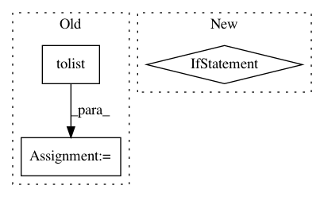

c1c31db36facdf8d557f4dcc69866ac86814b83f,pynndescent/pynndescent_.py,NNDescent,_init_search_graph,#NNDescent#,900
Before Change
// Preserve any distance 0 points
diversified_data[diversified_data == 0.0] = FLOAT32_EPS
self._search_graph.rows[:] = diversified_rows.tolist()
self._search_graph.data[:] = diversified_data.tolist()
// Get rid of any -1 index entries
self._search_graph = self._search_graph.tocsr()
After Change
del self._rp_forest
self._search_forest = [
convert_tree_format(tree, self._raw_data.shape[0])
for tree in best_trees
]
if self._is_sparse:
In pattern: SUPERPATTERN
Frequency: 4
Non-data size: 3
Instances
Project Name: lmcinnes/pynndescent
Commit Name: c1c31db36facdf8d557f4dcc69866ac86814b83f
Time: 2020-09-01
Author: leland.mcinnes@gmail.com
File Name: pynndescent/pynndescent_.py
Class Name: NNDescent
Method Name: _init_search_graph
Project Name: senarvi/theanolm
Commit Name: c15d91b235b77b177377ea382bdf9d4149e52ca5
Time: 2015-09-20
Author: seppo.git@marjaniemi.com
File Name: theanolm/src/rnnlm.py
Class Name: RNNLM
Method Name: load_params
Project Name: PacktPublishing/Deep-Reinforcement-Learning-Hands-On
Commit Name: 1a89404a84393211c7b370077fafe536a8f44762
Time: 2018-03-02
Author: max.lapan@gmail.com
File Name: ch17/lib/common.py
Class Name:
Method Name: iterate_batches
Project Name: soft-matter/trackpy
Commit Name: cc410f68b6c1d1417322ec02e22ea7713ca0bc48
Time: 2020-03-18
Author: ruben@lighthacking.nl
File Name: trackpy/locate_functions/brightfield_ring.py
Class Name:
Method Name: locate_brightfield_ring